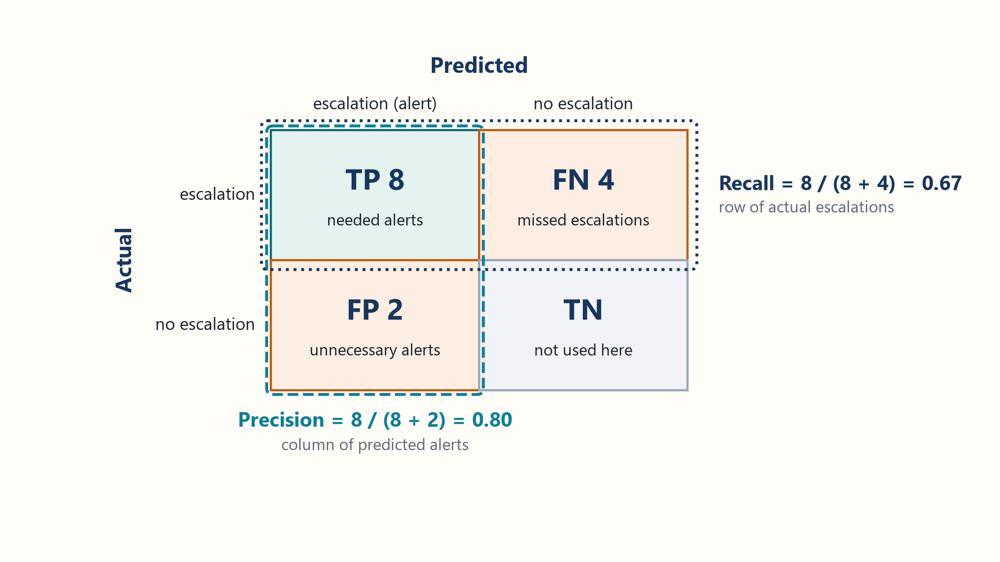
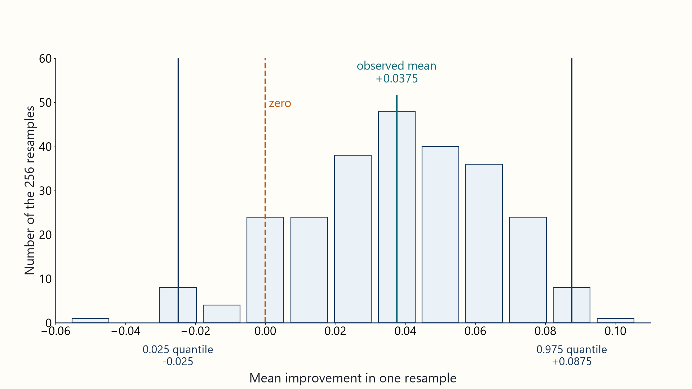

4 Measuring answer quality with metrics and judge models
An evaluation needs cases with known outcomes or grading criteria and a scoring method that fits its output and the cost of each error. Classification, free text, and code call for different checks. The shared evaluation rules and cases come first. Metrics, benchmarks, model judges, human ratings, and uncertainty estimates then provide different kinds of evidence.
![Eight numbered panels reuse the earlier map scenes. Criteria branch into quality, latency, cost, safety, trials, and slices. Synthetic and representative cases pass through validation into a golden set split between development and held-out release cases. A classification example has TP 8, FN 4, FP 2, unspecified TN, precision 0.80, and recall 0.67; a separate imbalanced example gives never-alert accuracy of 94 percent. Text and code metrics precede benchmark protocol, version, tools, and contamination. Answer orders A,B and B,A test position effects; an illustrative human-judge agreement of 42/50 and kappa 0.50 remains separate. Independent raters score answers, followed by a record of resolved labels. Paired bootstrap resampling keeps baseline and candidate cases together and does not cover every source of error.](../assets/fig-m1-c05-f01.png)
The map connects fixed evaluation rules and cases to the measures used to score answers, the checks on those measures, and the uncertainty in their results.
4.1 Evaluation criteria: success and failure
A deterministic program often has one expected output for one input. Language tasks often have several valid outputs, raters frequently disagree, and an improvement in one quality can reduce another.
Written evaluation rules turn the expected task behavior into measurable qualities and failure costs. An evaluation specification (eval) combines fixed cases, a scoring procedure, a comparison target (scores from a reference system or a minimum or maximum acceptable score), and the product decision it informs. An evaluation run is one execution of that specification on a system version. The specification is versioned because user behavior and models change.
An answer can be factually correct but too slow, unsafe, unsupported, or expensive. It can satisfy an automated text metric while violating the user’s intent. Model versions and benchmarks also change quickly, so a public benchmark score cannot replace product-specific evaluation criteria.
A proxy metric is a measurement used in place of the outcome of interest. Success on test cases can serve as a proxy for success on customer requests, but production data must check that relationship.
In Chapter 1, evaluation meant running test cases and logging measurements without updating the model. As a product procedure, an evaluation runs a versioned system on specified cases, scores observable outcomes, and supplies evidence for a decision. Two more terms identify each attempt and the subsets compared across cases:
Trial: One attempt at one evaluation task. Because sampling, retrieval, and tools can vary, the same system can produce different answers across trials.
Slice: A defined subset of evaluation cases, such as language, customer tier, risk level, query type, document length, or tool requirement.
The evaluation specification then records four groups of measurements:
- Quality: correctness, relevance, groundedness (support for claims in the supplied evidence), completeness, style, or task success.
- Operational behavior: latency (time to complete a request), throughput (requests completed per unit of time), failure rate, token use, and monetary cost.
- Safety and policy: refusal behavior, harmful content, authorization, privacy, and escalation.
- Reliability: variation in scores across trials, environments, model versions, and data slices. Variance is a statistical measure of that spread.
Each dimension has its own measurement method and decision rule.
Aggregation can summarize ordinary variation, while mandatory checks protect non-negotiable behavior. A high average cannot compensate for exposing private data or executing an unauthorized action. The evaluation record keeps per-example scores and slice labels alongside any headline metric, allowing a release decision to distinguish broad improvement from a severe local regression.
In a comparison, the reference system is the baseline and the changed version is the candidate. Their scores are interpretable only with the cases, scoring rules, and conditions that produced them.
4.2 Golden evaluation sets
A convenient sample of test cases can contain too many easy requests and miss failures that would cause the most harm.
A golden set is a versioned collection of evaluation cases, each with an expected outcome or grading criterion.
It can be assembled from human-authored cases, de-identified production samples, synthetic variations, and adversarial tests. Production records should be de-identified or handled under the product’s privacy controls.
CheckList1 supports organizing focused behavioral tests by capability and test type, but the exact mixture and maintenance policy here are product decisions.
A support-routing system needs ordinary FAQ cases, legitimate escalations, ambiguous cases, out-of-scope requests, multilingual messages, and policy-conflict cases. If missing an escalation is costly, the evaluation should report that slice separately.
The evaluation can include a larger share of escalation cases than occurs in the target traffic. For a mean score over disjoint, representative groups that together cover that traffic, weighting each group’s mean by its traffic share estimates the production mean. The estimate requires defensible traffic shares and representative cases within each group. Hand-selected synthetic or adversarial sets do not establish those conditions. Section 4.3 extends this adjustment to classification scores after explaining what they measure.
Synthetic evaluation data
Synthetic cases cover known dimensions and failure hypotheses that are underrepresented in available production data. They are useful when new features lack production volume, rare safety edge cases require testing, or a test must isolate one changed condition.
A written specification guides case generation. Duplicate cases are removed, and people or deterministic checks validate the expected outcomes or grading criteria. Validated real failures can be added when they become available, so the suite also covers observed behavior.
Limitation: A generator reproduces its own assumptions and may miss real user language or operational constraints.
Averages can hide subgroup failures
An overall score can rise while a critical subgroup declines. Important slice results should appear beside the headline metric, with enough examples to diagnose why the slice moved.
A comparison between versions is valid only when it changes the intended variable and preserves the remaining conditions. Section 5.3 lists the conditions a run record keeps.
Repeated runs are relevant when sampling, routing, tools, or environment state introduce variation. The comparison reports the distribution of outcomes across the full run set.
Development cases guide tuning, while held-out release cases test the resulting system. Repeatedly tuning against the release cases can fit their answers and weaken the evidence about unseen requests.
Changes in traffic, requirements, observed failures, or risks can require new cases or a review of expected outcomes and grading criteria. A rubric specifies grading criteria and rules for assigning grades to an answer. Its grades are separate from the thresholds that decide release. Changes to case data or grading rules start a new protocol version. If a language model grades the answers, changing that model also starts a new version. The new score is not presented as a direct continuation of the old one.
4.3 Classification metrics and error costs
A golden set supplies labeled outcomes and product-relevant slices. Classification needs measures that distinguish false alarms from missed cases, because their costs can differ. A positive class is the outcome the product treats as present. For a support-routing task, requires escalation is the positive class: an alert predicts escalation, while no alert predicts non-escalation. A confusion matrix counts each actual class against each predicted class. Its four cells make the error types concrete:
- Actual escalation predicted as escalation: true positive (TP), a needed alert.
- Actual non-escalation predicted as escalation: false positive (FP), an unnecessary alert.
- Actual escalation predicted as non-escalation: false negative (FN), a missed escalation.
- Actual non-escalation predicted as non-escalation: true negative (TN), correctly no alert.
Accuracy is the share of all cases classified correctly, \((TP+TN)/(TP+FP+FN+TN)\). It hides the error types when one class dominates. If 94 of 100 tickets need no escalation, a system that never raises an alert has 94% accuracy and finds no escalations. Appendix C.1 uses this majority-class baseline.
The next measures distinguish false alarms from missed positive cases.
Precision: The share of positive predictions that are correct. It asks how trustworthy a positive prediction is.
\[ \mathrm{Precision} = \frac{TP}{TP+FP} \tag{4.1}\]
Here, \(TP\) counts correctly predicted positives and \(FP\) counts negative cases incorrectly predicted as positive. The numerator contributes justified alerts, while the denominator contains every alert the system raised. Precision is high when few raised alerts are false.
Recall: The share of actual positive cases that the system finds. It asks how completely the system finds the cases of interest.
\[ \mathrm{Recall} = \frac{TP}{TP+FN} \tag{4.2}\]
Here, \(FN\) counts positive cases the system missed. The numerator again counts detected positives, while the denominator contains every actual positive case, including those the system missed. Recall is high when few important cases are missed.
F1: The harmonic mean of precision and recall.
\[ F_1 = \frac{2PR}{P+R} \tag{4.3}\]
Here, \(P\) is precision and \(R\) is recall. The harmonic mean gives more weight to the smaller value: precision 0.9 and recall 0.1 give F1 = 0.18, compared with an arithmetic mean of 0.5. F1 summarizes this balance in one number, but it does not account for false alarms and missed cases having different costs. Precision is undefined when the system raises no alerts, and recall is undefined when the set contains no actual positives. The reporting protocol must state how it handles those cases and F1 when both inputs are zero, rather than treating an undefined result as measured success.
Example 4.1: Escalation alerts
An evaluation set contains 12 cases that truly require escalation. The system raises 10 alerts, and 8 of those alerts are correct.
- TP = 8. The two incorrect alerts give FP = 2.
- Four required escalations were missed, so FN = 4.
- Precision = 8 / (8 + 2) = 0.80.
- Recall = 8 / (8 + 4) = 0.67.
- F1 = 2 × 0.80 × 0.67 / (0.80 + 0.67) = 0.73 after rounding.
Result: The system’s alerts are usually correct, but it misses one third of required escalations.
Interpretation: If missed escalations carry larger harm, recall and the actual missed cases matter more than the balanced F1 headline.

Choosing requires escalation as positive makes a missed escalation an FN and an unnecessary alert an FP. Reversing the positive class relabels the cells: TP and TN exchange roles, as do FP and FN. Precision and recall then measure non-escalation performance instead.
Rows represent actual classes and columns predicted classes in this figure. Axis orientation must be checked because libraries do not all display matrices identically.
An evaluation set may contain a larger share of rare cases than the target traffic, as in Section 4.2. To estimate precision, recall, or F1 for that traffic, each case receives a sampling weight that corrects how often its group was sampled. For disjoint groups that together cover the target traffic, let group \(g\) have traffic share \(s_g\) and \(n_g>0\) cases sampled representatively within that group. Giving each case \(i\) in it weight \(w_i=s_g/n_g\) makes the group’s total weight \(n_g(s_g/n_g)=s_g\). Sum these weights over true positives, false positives, and false negatives to obtain \(TP_w\), \(FP_w\) and \(FN_w\).
- Precision is \(TP_w/(TP_w+FP_w)\).
- Recall is \(TP_w/(TP_w+FN_w)\).
- F1 is \(2TP_w/(2TP_w+FP_w+FN_w)\).
The zero-denominator rules above also apply to these weighted ratios.
Averaging group precision or F1 values generally gives a different result. Precision divides the weighted correct alerts by the weighted total alerts, so a group’s contribution depends on how often it raises an alert, not just its traffic share. The estimate requires defensible traffic shares and representative cases. Hand-selected synthetic or adversarial sets do not establish those conditions. Overlapping slices need a different weighting calculation than the disjoint-group formula to avoid counting one case more than once.
Exact match is appropriate when the correct output has one canonical form or can be normalized without changing its meaning, such as an identifier or an allowed label. For a multi-class task, calculate each class’s precision, recall, or F1 by treating that class as positive and all others as negative. Report the per-class results and how the aggregate combines them. Macro averaging takes the unweighted mean of the per-class scores. Micro averaging first sums TP, FP, and FN across classes, then applies the metric’s formula to those totals. Weighted averaging multiplies each class’s score by its share of actual cases, then adds the results. The protocol states how undefined per-class scores are handled. This class-frequency averaging differs from the traffic-share sampling weights above. A single aggregate can hide a rare but important class.
The predicted labels in the confusion matrix can come from a score and a cutoff. A confidence score is a number used to express how strongly the system supports a specified event or answer. For this binary task, the score expresses support for the event requires escalation. The classifier emits the positive label when that score reaches the chosen cutoff and the negative label otherwise. Comparing those labels with the known outcomes gives the TP, FP, FN, and TN counts. When the cutoff crosses a recorded score, that case’s predicted label changes. Precision and recall can then change.
Example 4.2: Moving an escalation cutoff
The escalation system above raises an alert when its score for requires escalation is at least 0.5, which gives TP = 8, FP = 2, and FN = 4.
- Lowering the cutoff to 0.3 adds 3 correct and 4 unnecessary alerts: TP = 11, FP = 6, FN = 1.
- Precision = 11 / (11 + 6) = 0.65.
- Recall = 11 / (11 + 1) = 0.92.
Result: The lower threshold misses one escalation instead of four, but 6 of its 17 alerts are unnecessary.
Interpretation: Error costs and labeled-case results guide the cutoff choice. A useful tested cutoff can use a score without interpreting it as a probability. Changes to the model, prompt, score calculation, or input population require a new check.
One score calculation uses label-token probabilities. Suppose the prompt maps each label to one token, such as A for escalation and B for non-escalation. If the API returns a log-probability for a label token at the label position, exponentiating it gives that token’s probability under the distribution the API reports (Section 1.6). The record must say whether these are raw model probabilities or probabilities adjusted by generation settings.
A top-logprob response may omit some labels, so it may not supply the values needed for this calculation. If other tokens remain possible, label-token probabilities need not sum to one. Restricting generation can change the sampling distribution without changing which distribution the API reports.
Renormalizing all label probabilities produces probabilities conditional on the allowed labels under the reported distribution. For labels A and B, divide each reported probability by their sum, provided that sum is positive. For example, probabilities 0.2 and 0.3 become \(0.2/(0.2+0.3)=0.4\) and \(0.3/(0.2+0.3)=0.6\). Renormalization needs every label’s probability, not just the labels present in a truncated response. These scores do not by themselves establish a probability that escalation is required or that the chosen answer is correct.
To interpret a score as a probability, its values need a separate check. Confidence calibration is agreement between predicted probabilities and the observed frequency of the event they describe. For an escalation probability of about 0.9, about 90 percent of those cases should actually require escalation. Confidence in the chosen answer checks a different event: among answers assigned confidence about 0.9, about 90 percent should be correct. A low escalation probability can support a correct non-escalation answer, so it is not the same as low confidence in that answer. This differs from judge calibration in Sections 4.6 and 4.7, which compares a judge’s labels with human labels.
Alignment training can weaken confidence calibration. In the GPT-4 technical report, the pre-trained model’s answer probabilities on a subset of MMLU, a multiple-choice benchmark described in Section 4.5, matched its accuracy, and the post-trained model’s did not.2 Tian et al. found that confidence stated in the answer text was often better calibrated than token probabilities for models trained with human feedback.3
Both results describe other models and data. A product check fixes the model, prompt, generation settings, score calculation, event being predicted, and evaluation data. Group labeled cases by the score and compare each group’s average with the frequency of that event. For example, 50 tickets have average escalation probability 0.95, but only 40 require escalation. Their observed escalation frequency is 0.80, so the score overstates that event’s probability in this group. If the score instead predicts chosen-answer correctness, count correct answers in each group. Calibration results apply to the tested setup and data, and need rechecking when either changes.
4.4 Automated metrics for different output types
Section 4.3 covered classification metrics with fixed labels. Open-ended text can be worded in many different ways, so exact matching rejects many acceptable paraphrases. Evaluators use word-sequence overlap to compare text automatically.
N-gram: A run of \(n\) neighboring tokens. These tokens come from the metric’s tokenizer and need not match the model’s tokens. In “red fox runs,” “red fox” is a bigram. N-gram metrics count how many of these n-grams overlap between a candidate and a reference.
- BLEU: A machine-translation evaluation metric that combines modified n-gram precision with a brevity penalty.4
- ROUGE: A family of overlap-based measures developed for summary evaluation, including recall-oriented variants.5
Both metrics are fast, cheap, and deterministic.
Their main limit is that lexical overlap does not establish meaning. If a reference says “large automobile” and a candidate says “big car,” the wording can receive little or no n-gram credit despite expressing the same idea. Reordering has a more specific effect: unigram counts can remain unchanged, while bigram and longer n-gram overlap usually falls.
For example, the reference “The red car is small” and the candidate “The small car is red” both state that one car is red and small. With lowercase, whitespace tokenization, they contain the same five unigrams. The candidate’s four bigrams are the small, small car, car is, and is red. Only car is occurs in the reference, so the candidate’s bigram precision is 1/4 despite the unchanged meaning. BLEU combines several n-gram lengths with a brevity penalty, so the exact score also depends on the scoring setup. The opposite error is possible: The red car is not small preserves most reference phrases while reversing the size claim.
BLEU and ROUGE are therefore useful as rough baseline measures when word overlap matters. They can penalize valid paraphrases and reward text that copies the reference without preserving its meaning, so neither score represents semantic truth. BERTScore is a text-comparison metric that matches token vectors between a candidate and a reference. These contextual vectors depend on surrounding words, rather than only on a fixed token lookup, so the metric can credit many paraphrases.6 BERTScore still measures similarity to a reference, not factual support.
For code, a test suite can execute a completion and grade its behavior. Pass@k: A code-generation metric that estimates whether at least one of k generated attempts passes the tests. Chen et al.7 used this measure with HumanEval and estimated it from observed attempts. The simpler calculation below starts from an assumed one-attempt success probability \(p\). If the \(k\) attempts are independent and each has that success probability, the probability of at least one success is:
\[ P(\mathrm{success\ by\ }k) = 1-(1-p)^k \tag{4.4}\]
Here, \(p\) is the success probability for one attempt and \(k\) is the number of independent attempts. The term \((1-p)^k\) is the probability that every attempt fails, so subtracting it from one gives the probability of at least one success. This calculation is useful when a justified value of \(p\) is already available.
Example 4.3: Independent pass at five
Suppose one generated program has a 0.30 probability of passing all hidden tests and five attempts are independent.
- One attempt fails with probability 1 - 0.30 = 0.70.
- All five fail with probability 0.70⁵ = 0.16807.
- At least one succeeds with probability 1 - 0.16807 = 0.83193.
Result: The idealized pass-at-five probability is about 0.832.
Interpretation: This is a probability calculation from an assumed value of \(p\), not an estimate from observed code samples. It requires independent attempts with the same success probability, and producing five answers multiplies cost.
A benchmark starts from observed samples rather than a known value of \(p\). For one programming problem, generate \(n\) samples, count the \(c\) samples that pass the same tests, and choose an evaluation value \(k\) with \(n \ge k\). The finite-sample estimator used in the Codex evaluation paper is \(\mathrm{pass}@k=1-\frac{\binom{n-c}{k}}{\binom{n}{k}}\).
The denominator counts every way to choose \(k\) samples from the \(n\) generated programs. The numerator counts choices made entirely from the \(n-c\) failures. Their ratio is the share with no passing program. Subtracting that share from one gives the estimated chance that a group of size \(k\) contains at least one success. A benchmark averages this value across its programming problems.
Example 4.4: Observed pass at two
Generate 10 programs for one problem. Three pass the tests, and the evaluation reports pass@2.
- All pairs: \(\binom{10}{2}=10\times9\div2=45\). Selecting a first and second program counts each unordered pair twice, so divide by two.
- Pairs containing only failed programs: \(\binom{7}{2}=7\times6\div2=21\).
- Estimated pass@2: \(1-21/45=24/45\approx0.533\).
Result: About 53.3 percent of the possible two-program subsets contain at least one observed success.
Interpretation: The estimate depends on the model, prompt, sampling settings, and tests used to produce the 10 outcomes. It measures success when an evaluator can identify a passing program. It does not show that a deployment without tests can select the correct program.
The estimator requires \(n \ge k\). For each problem, the \(n\) programs must be sampled independently from the same model, prompt, and generation settings, then graded with the same correctness tests. Under these sampling assumptions, the Codex paper shows that the formula is unbiased: its average over repeated samples equals the probability that at least one of \(k\) attempts passes the tests. Separately, the test suite must represent the required behavior if passing is to measure that behavior. Substituting the observed rate \(c/n\) into \(1-(1-p)^k\) gives an estimate that is generally biased across repeated samples. The reported result includes \(n\), \(c\), \(k\), the sampling settings, and the test-suite version so its sampling and test conditions can be checked.
A metric selects evidence for one question. Error analysis and traces are still required to find the responsible product component.
4.5 Benchmarks and data contamination
Task metrics score one evaluation set under one procedure. Public benchmarks package a dataset, metric, and protocol so model results can be compared, but their meaning changes as models and training corpora change. Benchmark interpretation requires separating measured capability, contamination risk, saturation, and product relevance.
Benchmark saturation occurs as many models score near a benchmark’s maximum. Small remaining score differences then provide little separation, and the benchmark may no longer expose the harder failures relevant to a product. This differs from contamination: models can solve most items without having seen them during training.
Public benchmarks target different tasks. Massive Multitask Language Understanding (MMLU) uses subject-area multiple-choice questions, the AI2 Reasoning Challenge (ARC) uses grade-school science questions, and HellaSwag tests selection of plausible continuations.8 Grade School Math 8K (GSM8K) tests multi-step arithmetic word problems, and Graduate-Level Google-Proof Q&A (GPQA) uses difficult science questions.9 HumanEval10 and Mostly Basic Python Problems (MBPP)11 evaluate small programming tasks against tests, while SWE-bench evaluates repository issue resolution.12 HELM13 shows how model conclusions can change across scenarios and measurements. A result belongs to the exact benchmark version, prompt protocol, sampling settings, tool access, and grading environment. It should not be generalized to unrelated product tasks.
Data contamination: A condition in which benchmark questions, answers, patches, or close variants enter model training or evaluation-time retrieval. A contaminated model can score well without demonstrating generalization. LiveBench14 uses frequently updated questions from recent sources and objective scoring to limit contamination. Its authors describe it as contamination-limited, because regularly refreshed questions reduce exposure and tuning risk without eliminating it.
Long-context tests also require interpretation. A needle-retrieval task measures whether one fact can be recovered from a long sequence. RULER15 found that strong performance on simple retrieval did not always carry over to harder tasks requiring several linked facts or aggregation of several facts. A needle result therefore does not establish reasoning over all relationships in that context. Latency, cost, safety, and robustness need separate protocols.
| Benchmark question | Evidence to record | Invalid inference to avoid |
|---|---|---|
| Which capability is measured? | Dataset domain, task format, scoring rule | The model is generally intelligent or product-ready |
| Was the protocol comparable? | Prompt, tools, samples, temperature, version | Two published scores used identical conditions |
| Could training exposure inflate results? | Release date, training cutoff, leakage analysis | A high score proves unseen generalization |
| Does the result transfer? | Product eval correlation and failure slices | Public ranking predicts private workflow performance |
A benchmark name alone does not identify a score: dataset version, prompt template, few-shot examples, decoding settings, tool access, scoring code, and model checkpoint all change the number. Contamination and repeated tuning further weaken it as evidence about unseen product inputs.
Public benchmarks remain useful for broad capability screening and regression detection. The multi-scenario evaluation discussed in Section 1.7 still does not represent one product’s users, failure costs, and operating constraints. Product decisions therefore need representative local cases. Agreement between a public result and a product evaluation strengthens the conclusion. Disagreement can reflect distribution differences, protocol differences, or sampling variation, and requires inspection.
For example, a stronger HumanEval result can justify placing a code model on a shortlist because the benchmark executes generated solutions against tests. It cannot approve a repository assistant for release. That decision also needs local cases covering the project’s languages, dependencies, tests, permission limits, latency, and failure costs.
4.6 Checking model judges
Verifiable tests and lexical metrics cannot grade every open-ended answer. LLM-as-a-judge is an evaluation method that uses a language model to score or compare candidate outputs against a rubric. A model judge is the language model doing that grading. It can grade many outputs, but its judgments can reflect biases or vary between repeated calls. Candidate text can also influence the judge. Reliable use requires a written rubric, controlled presentation, human calibration, and adversarial tests.
Pairwise judging can be easier than assigning an absolute score because it asks which answer better satisfies explicit criteria. Single-answer grading can return per-criterion ratings and explanations that support error analysis.
The evaluation application sends the task, candidate outputs, any evidence the rubric requires, and the rubric to the judge. The judge returns scores or a comparison result, with an explanation if requested. The application records the judgments and compares a sample with human ratings of the same outputs. Objective checks can remain in place for syntax, execution, citations, and final state.
A model judge can still misgrade otherwise comparable answers in several ways:
- Position bias: The judge may prefer the first or second answer. An evaluation protocol can swap or randomize order.
- Verbosity bias: Longer answers may appear more detailed. The evaluation specification can state a target length and penalize irrelevant content explicitly.
- Self-enhancement bias: A judge may prefer outputs it generated itself. A calibration study can compare its grades with those from a judge from another model family or with human labels.
- Prompt injection: Candidate text may instruct the judge to ignore the rubric. The evaluator can treat candidates as untrusted data and include attack cases.
- Rubric drift: Grading criteria or their application change over time or between versions. Fixed but vague rules cause ambiguity, which is a different problem. Versioned grading rules and examples let reviewers check whether the criteria or their use changed.
Zheng et al.16 measured position and verbosity effects and examined possible self-preference in their tested model judges and prompts. Their limited data did not establish self-enhancement bias. The study does not give a universal bias rate, so each evaluation protocol must repeat calibration with its own rubric and answer distribution.
For a product description, a compact rubric can grade three criteria. Factual support passes only if every factual claim is supported by the source record. Completeness passes only if every required care instruction appears. Clarity passes only if the care instructions identify which part each instruction applies to. A description passes only when all three criteria pass. Human raters and the model judge use the same rubric version. A pairwise rubric also needs a rule for choosing between the answers, such as preferring the answer that passes more criteria, and a rule for ties. These answer-grading rules do not decide release: the release rule also checks required slices, cost, latency, and policy limits.
See Example 4.5 for the implementation.
Example 4.5: Pairwise judging randomizes answer order and restores the original identity afterward.
The shortened judge_pair example takes an evaluation case, two original answers, and a judge adapter. Its optional order argument supplies a display order, such as ("B", "A"); without it, the function chooses the order randomly. It is not a standalone program: the application supplies render_rubric, RUBRIC_VERSION, and the adapter. The renderer builds the prompt from the task, evidence, and candidates. The adapter returns an object with integer winner_index 0 for the first displayed answer or 1 for the second, plus criterion_scores and explanation. Scores retain their displayed-answer identities. This simplified comparator requires a winner. A production rubric that allows ties needs a tie response and handling rule. The returned record maps the winner back to original answer A or B and stores the rubric version and display order. The order links scores and explanations for the first and second displayed answers back to A and B.
import random
def judge_pair(case, answer_a, answer_b, judge, order=None):
candidates = {"A": answer_a, "B": answer_b}
display_order = tuple(order) if order is not None else tuple(
random.sample(["A", "B"], k=2)
)
if len(display_order) != 2 or set(display_order) != {"A", "B"}:
raise ValueError("order must contain A and B exactly once")
prompt = render_rubric(
task=case.task,
evidence=case.evidence,
candidate_1=candidates[display_order[0]],
candidate_2=candidates[display_order[1]],
)
verdict = judge(prompt)
if type(verdict.winner_index) is not int or verdict.winner_index not in (0, 1):
raise ValueError("judge returned an invalid winner_index")
return {
"selected": display_order[verdict.winner_index],
"display_order": list(display_order),
"criterion_scores": verdict.criterion_scores,
"explanation": verdict.explanation,
"rubric_version": RUBRIC_VERSION,
}The function rejects an invalid display order and a winner_index that is not integer 0 or 1. Mapping the index through display_order keeps answer identity separate from display position. Randomizing order distributes position effects across cases. Swapping the same pair tests whether its verdict changes. Neither check establishes that the judge is correct. The full run record must also retain the display order, judge model, prompt, and raw verdict so the scores and explanation remain interpretable. A per-criterion comparison with audited human labels reveals the judge’s disagreement patterns.
Observed agreement: The fraction of audited cases for which the human and model-judge labels match under a fixed rubric.
\[ A_o=\frac{1}{N}\sum_{i=1}^{N}\mathbb{1}(h_i=j_i) \tag{4.5}\]
Here, \(N\) is the audited case count, \(h_i\) is the human label for case \(i\), \(j_i\) is the judge label, and the indicator contributes one only when the labels match. The average reports the matching fraction. It does not adjust for agreement expected from class prevalence, so it belongs beside a confusion matrix and per-class results. Cohen’s kappa corrects for that chance agreement: \(\kappa=(A_o-A_e)/(1-A_e)\), where \(A_e\) is the agreement expected if the human and the judge labeled cases independently at their own label rates.17
Example 4.6: Human-judge agreement
An audited sample contains 50 cases, and the human and model judge produce the same criterion label on 42.
- The indicator contributes one for each of the 42 matching rows and zero for the remaining eight.
- The sum of indicators is 42.
- Observed agreement is 42 / 50 = 0.84.
- If the human and the judge each label 40 of the 50 cases as pass, chance agreement is \(0.8^2 + 0.2^2 = 0.68\), so kappa is \((0.84 - 0.68)/(1 - 0.68) = 0.50\).
Result: The observed human-judge agreement is 84 percent, but kappa shows only half of the agreement possible beyond chance.
Interpretation: The eight disagreements require inspection. A judge that always chooses the majority class can obtain high agreement while failing the rare cases that matter most.
See Example 4.7 for the implementation.
Example 4.7: Swapped presentations expose position-sensitive verdicts before agreement is reported.
This procedure reuses judge_pair from the earlier pairwise-judge listing, including its rubric renderer and model response format. Each call returns a dictionary with the selected candidate’s original identity, so the comparison remains valid when the display order changes.
def judge_with_position_swap(case, answer_a, answer_b, judge):
first = judge_pair(case, answer_a, answer_b, judge, order=("A", "B"))
second = judge_pair(case, answer_a, answer_b, judge, order=("B", "A"))
consistent = first["selected"] == second["selected"]
return {
"selected_if_ab": first["selected"],
"selected_if_ba": second["selected"],
"position_consistent": consistent,
"final_label": first["selected"] if consistent else "human_review",
}
def observed_agreement(human_labels, judge_labels):
if not human_labels or len(human_labels) != len(judge_labels):
raise ValueError("label lists must be non-empty and equally long")
matches = sum(h == j for h, j in zip(human_labels, judge_labels))
return matches / len(human_labels)The two presentations are separate judge calls over the same task and candidates. The first displays A then B, and the second displays B then A. A judge that always returns index 0 selects A on the first call and B on the second, so the function returns human_review. A changed identity can arise from position effects or random variation. Repeating each order helps distinguish them. The function returns both identities and a consistency flag. Choosing only the favorable order would hide the disagreement.
observed_agreement compares labels with the same meaning. For pairwise choices, human and judge labels must both identify A or B. The earlier pass/fail calculation instead compares criterion-level labels from single-answer grading. It is a different use of the same agreement formula. A human_review result is an unresolved choice, not a pass or fail. Its frequency is recorded separately, with a rule stating whether agreement counts it as a disagreement or uses only resolved cases. A confusion matrix shows which labels disagree. Agreement does not establish that either label source is correct, especially under severe class imbalance. The evaluation protocol defines the response to low agreement: a revised rubric, more human labels, or human review for the affected criterion. Critical criteria remain under human review until the judge meets that rule.
4.7 Automated scores and human review
A calibrated model judge can automatically score more open-ended outputs than people can review case by case. Some judgments still require domain expertise, and some behaviors must be discovered before a fixed rubric can score them. Human reviewers supply reference ratings while automated pipelines generate, run, and summarize larger sets of behavioral tests.
Human evaluation supplies an important reference for subtle usefulness, domain correctness, and policy interpretation under a documented procedure. It is expensive and subject to disagreement. A sound procedure gives raters the same written criteria, randomizes presentation where possible, collects multiple ratings for ambiguous tasks, and records disagreement explicitly. The review by Van der Lee et al.18 explains how rater selection, instructions, presentation, aggregation, and reporting can change the result.
Anthropic19 released Bloom in December 2025 as an open-source tool for automated behavioral evaluations. Its official description says that Bloom turns a researcher-specified behavior into targeted scenarios and estimates the behavior’s frequency and severity. The tool runs those scenarios against a target model, scores each transcript with a judge, and produces a suite-level analysis with a meta-judge. This expands coverage systematically, though the generated scenarios and judge still require validation.
An automated pipeline can increase the number of evaluated behaviors, but each stage adds assumptions. Bloom uses a configuration file, called the seed, to specify the behavior description, any example transcripts, and evaluation parameters.20 The evaluation record retains that file, scenario generator, model versions, transcripts, and judge configuration so those assumptions and results can be inspected.
Human calibration
Human calibration uses a subset sampled from each relevant slice and the criteria a model judge will apply at scale. It is useful when the task is open-ended, high-impact, domain-specific, or vulnerable to judge bias.
Independent raters score the subset, and a reviewer resolves disagreements. A per-criterion comparison then measures model-judge agreement against the final human labels before the rubric and its grading examples are revised. Calibration turns an untested model-judge opinion into a measured proxy with known disagreement patterns.
Limitation: A small rater group, or one whose members have similar backgrounds, can encode shared bias. Low agreement may also mean the task is not specified clearly enough.
The protocol also defines rater qualification and sample allocation. Where feasible, blinding hides which model produced an answer from the raters while keeping the task and evidence they need to grade it. Low inter-rater agreement can reveal vague rubric criteria, ambiguous tasks, or different interpretations of the same saved answer. Repeated generations, scored separately, are needed to measure output instability.
Outputs used to revise the rubric or judge prompt belong to calibration and development. A separate held-out human-labeled subset measures final agreement. Reporting agreement on the same outputs used to tune the judge can overstate how well it will handle new answers.
These evaluator records lead to the next question: whether an observed improvement is stable across sampled cases and repeated runs. Section 4.8 estimates uncertainty before Chapter 5 uses the results for diagnosis and release decisions.
4.8 Score uncertainty
Metrics and judge models produce sample scores on a fixed evaluation set. A difference such as 70 percent versus 60 percent may come from sampled cases or random variation between runs. Confidence intervals and repeated runs help distinguish a stable difference from variation in sampled cases or outputs. Results for individual slices show when an overall gain hides a local regression.
A narrow interval around a weak proxy cannot establish user value, and an aggregate interval can conceal critical slice regressions. The interval also needs a calculation and assumptions that match the comparison.
An interval is interpretable when the report also gives sample size, protocol, model version, and slice results.
A bootstrap confidence interval estimates sampling uncertainty by drawing from the observed evaluation cases with replacement and recomputing the statistic. Each resample contains as many cases as the original set. “With replacement” means a case can appear more than once while another is absent. For a paired comparison, each selected case includes both its baseline and candidate scores, so the comparison keeps the same case difficulty on both sides. Repeating this process gives a distribution of resampled statistics. Its selected percentiles form the interval. A nominal 95 percent confidence interval aims to cover the population value in 95 percent of repeated evaluations under the method’s sampling assumptions. Here, the population value is the mean score difference across all cases in the intended task distribution, not just the sampled cases. It is not a 95 percent probability that this particular candidate improves the product. Efron21 established the bootstrap method. Bouthillier et al.22 show that data sampling, initialization, and hyperparameter choices can all affect benchmark comparisons, so one percentile interval over cases does not capture every source of variation.
\[ CI_{1-\alpha}=[q_{\alpha/2}(m_{1:B}),q_{1-\alpha/2}(m_{1:B})] \tag{4.6}\]
Here, \(m_b\) is the metric or paired metric difference calculated on bootstrap sample \(b\), \(B\) is the number of resamples, \(q\) selects empirical quantiles, and \(\alpha\) is the nominal rate at which intervals miss the population value across repeated evaluations. This is the intended rate rather than a guaranteed rate for this sample. A quantile identifies a position in the sorted resampled statistics, with interpolation between values when the selected convention requires it. For a 95 percent interval, set \(\alpha=0.05\): the lower endpoint is the 0.025 quantile, near the bottom 2.5 percent, and the upper endpoint is the 0.975 quantile, near the top 2.5 percent. The interval estimates variation from sampling cases using the observed set. It does not correct label bias, benchmark contamination, user correlation, production distribution shift, or a metric that fails to represent the product decision. Repeated model or tool trials address run-to-run variation separately.
Example 4.8: Paired bootstrap interval
Four cases have baseline scores \((0.60, 0.80, 0.50, 0.90)\) and treatment (candidate) scores \((0.70, 0.75, 0.55, 0.95)\). Pair each treatment score with its own baseline score before resampling, giving deltas \((+0.10, -0.05, +0.05, +0.05)\). The observed mean improvement is \(0.0375\).
- A resample can select cases 1, 1, 3, and 4, producing deltas \((+0.10, +0.10, +0.05, +0.05)\) and a mean of \(+0.075\).
- Another can select cases 2, 2, 3, and 4, producing \((-0.05, -0.05, +0.05, +0.05)\) and a mean of \(0\).
- For this four-case illustration, enumerate all \(4^4 = 256\) ordered resamples. Using linear interpolation between sorted values for empirical quantiles, the 0.025 and 0.975 quantiles are \(-0.025\) and \(0.0875\).
Result: The interval is \([-0.025, 0.0875]\). It includes zero, so this small case set does not establish a positive improvement.
Interpretation: Pairing keeps each case’s baseline and treatment together. A larger evaluation set still needs a stated resample count, seed, and quantile convention.
The figure counts the means of all 256 resamples. The nominal 95 percent percentile interval runs from -0.025 to 0.0875, so zero stays inside the interval. With this discrete distribution, the fraction of resample means between the endpoints need not be exactly 95 percent.

See Example 4.9 for the implementation.
Example 4.9: Paired resampling estimates a percentile interval for the mean per-case score difference.
NumPy, imported as np, is a library for numerical arrays. The function below accepts two non-empty one-dimensional sequences of finite scores in matching case order. It computes per-case differences and returns two endpoints for their mean difference. Each draw selects as many case positions as the original set and keeps both systems’ scores paired. draws must be a positive integer. A fixed seed makes these draws repeatable in the recorded runtime, and method="linear" specifies the empirical quantile convention.
import numpy as np
def paired_bootstrap_delta_ci(baseline, treatment, draws=10_000, seed=17):
baseline = np.asarray(baseline, dtype=float)
treatment = np.asarray(treatment, dtype=float)
if (baseline.ndim != 1 or treatment.ndim != 1
or baseline.shape != treatment.shape or baseline.size == 0):
raise ValueError("scores need matching non-empty one-dimensional arrays")
if not (np.isfinite(baseline).all() and np.isfinite(treatment).all()):
raise ValueError("scores must be finite")
if isinstance(draws, (bool, np.bool_)) or not isinstance(draws, (int, np.integer)) or draws <= 0:
raise ValueError("draws must be a positive integer")
with np.errstate(over="ignore", invalid="ignore"):
deltas = treatment - baseline
if not np.isfinite(deltas).all():
raise ValueError("score differences must be finite")
rng = np.random.default_rng(seed)
try:
with np.errstate(over="raise", invalid="raise"):
estimates = [
deltas[rng.integers(0, len(deltas), size=len(deltas))].mean()
for _ in range(draws)
]
if not np.isfinite(estimates).all():
raise ValueError("scores exceed the supported numeric range")
endpoints = np.quantile(estimates, [0.025, 0.975], method="linear")
if not np.isfinite(endpoints).all():
raise ValueError("scores exceed the supported numeric range")
except FloatingPointError as error:
raise ValueError("scores exceed the supported numeric range") from error
return tuple(endpoints)Calling the function with the four-case scores above gives a random-sampling estimate of the enumerated interval. For these four cases, there are only 12 distinct resample means. With the default 10,000 draws and seed 17, the estimated endpoints match the enumerated interval in the recorded runtime. With fewer draws, such as 200, the endpoints can differ across seeds. A larger case set can have many more distinct resample means, so sampled endpoints can also vary with seed or draw count. Input shape, finiteness and draw-count checks run before resampling. Numeric overflow during resampling or interval calculation also raises ValueError.
Other methods compare systems under different assumptions. A paired t-test tests the mean of independent per-case differences. Its usual exact test assumes a normal distribution of those differences, a symmetric bell-shaped distribution around their mean. With many independent cases and finite variance, the mean may be approximately normal even when individual differences are not. McNemar’s test compares paired pass/fail outcomes by counting cases on which only one system passes. Bootstrap resampling can estimate uncertainty for medians, ratios, or rank metrics without a formula for their sampling distributions, but each resample must recompute the chosen statistic.23 The function above implements only a mean paired difference. Dror et al. compare tests for language-processing experiments, and Miller24 discusses paired comparisons and clustered errors when several cases share a source. Under an unchanged independent sampling design, interval width for a mean often shrinks roughly with the square root of the number of cases: quadrupling the case set about halves the width. Correlated cases or a different case mixture can invalidate that estimate.
The resampling unit must match the independence assumption. When one user contributes many correlated requests, a cluster bootstrap draws as many users as the original set, with replacement, and keeps each selected user’s request group together.25 Sessions can serve the same purpose when they are the independent groups. Few groups or an unusually influential group can make the interval unreliable. The statistic must still match the product question: averaging equally over users and averaging equally over requests measure different quantities. The case-level function above does not implement this grouped resampling.
An interval describes the uncertainty in a measurement. The next chapter uses measurements, their limits, and diagnosed failures to compare changes and decide whether they meet product requirements.
Ribeiro, M. T., Wu, T., Guestrin, C., & Singh, S. (2020). Beyond accuracy: Behavioral testing of NLP models with CheckList. In Proceedings of the 58th Annual Meeting of the Association for Computational Linguistics (pp. 4902–4912). Association for Computational Linguistics. https://doi.org/10.18653/v1/2020.acl-main.442. CheckList supports capability-focused cases. ↩︎
OpenAI. (2023). GPT-4 technical report. arXiv. https://arxiv.org/abs/2303.08774. Figure 8 compares calibration on a subset of MMLU before and after post-training, using the probability of each answer option as confidence. The result describes one model family and benchmark subset.↩︎
Tian, K., Mitchell, E., Zhou, A., Sharma, A., Rafailov, R., Yao, H., Finn, C., & Manning, C. (2023). Just ask for calibration: Strategies for eliciting calibrated confidence scores from language models fine-tuned with human feedback. In Proceedings of the 2023 Conference on Empirical Methods in Natural Language Processing (pp. 5433–5442). Association for Computational Linguistics. https://doi.org/10.18653/v1/2023.emnlp-main.330. On TriviaQA, SciQ, and TruthfulQA, stated confidence often reduced calibration error by about half relative to token probabilities. The tested models predate current ones.↩︎
Papineni, K., Roukos, S., Ward, T., & Zhu, W.-J. (2002). BLEU: A method for automatic evaluation of machine translation. In Proceedings of the 40th Annual Meeting of the Association for Computational Linguistics (pp. 311–318). Association for Computational Linguistics. https://aclanthology.org/P02-1040/. BLEU is corpus-oriented and depends on tokenization and reference choice. ↩︎
Lin, C.-Y. (2004). ROUGE: A package for automatic evaluation of summaries. In Text Summarization Branches Out (pp. 74–81). Association for Computational Linguistics. https://aclanthology.org/W04-1013/. ROUGE is a family of overlap measures.↩︎
Zhang, T., Kishore, V., Wu, F., Weinberger, K. Q., & Artzi, Y. (2020). BERTScore: Evaluating text generation with BERT. In International Conference on Learning Representations. https://arxiv.org/abs/1904.09675. BERTScore matches contextual token embeddings between candidate and reference. It remains a reference-similarity measure.↩︎
Chen, M., Tworek, J., Jun, H., Yuan, Q., Pinto, H. P. de O., Kaplan, J., Edwards, H., Burda, Y., Joseph, N., Brockman, G., Ray, A., Puri, R., Krueger, G., Petrov, M., Khlaaf, H., Sastry, G., Mishkin, P., Chan, B., Gray, S., . . . Zaremba, W. (2021). Evaluating large language models trained on code. arXiv. https://arxiv.org/abs/2107.03374. The paper supports pass@k under its sampling and test setup. Passing tests does not establish safety or correctness outside the test suite.↩︎
Hendrycks, D., Burns, C., Basart, S., Zou, A., Mazeika, M., Song, D., & Steinhardt, J. (2020). Measuring massive multitask language understanding. arXiv. https://arxiv.org/abs/2009.03300. Section 3 describes MMLU’s subject-area multiple-choice tasks. Clark, P., Cowhey, I., Etzioni, O., Khot, T., Sabharwal, A., Schoenick, C., & Tafjord, O. (2018). Think you have solved question answering? Try ARC, the AI2 Reasoning Challenge. arXiv. https://arxiv.org/abs/1803.05457. The ARC Dataset section describes grade-school science questions. Zellers, R., Holtzman, A., Bisk, Y., Farhadi, A., & Choi, Y. (2019). HellaSwag: Can a machine really finish your sentence? arXiv. https://arxiv.org/abs/1905.07830. The task selects a plausible continuation from alternatives.↩︎
OpenAI. (n.d.). Grade School Math [Dataset documentation]. GitHub. Retrieved October 16, 2026, from https://github.com/openai/grade-school-math/blob/master/README.md. Dataset Details describes GSM8K’s multi-step arithmetic word problems. Rein, D., Hou, B. L., Stickland, A. C., Petty, J., Pang, R. Y., Dirani, J., Michael, J., & Bowman, S. R. (2023). GPQA: A graduate-level Google-proof Q&A benchmark. arXiv. https://arxiv.org/abs/2311.12022. The question-writing, validation and domains sections describe expert-written science questions. The GPQA title does not guarantee that every question resists search or avoids contamination.↩︎
Chen, M., Tworek, J., Jun, H., Yuan, Q., Pinto, H. P. de O., Kaplan, J., Edwards, H., Burda, Y., Joseph, N., Brockman, G., Ray, A., Puri, R., Krueger, G., Petrov, M., Khlaaf, H., Sastry, G., Mishkin, P., Chan, B., Gray, S., . . . Zaremba, W. (2021). Evaluating large language models trained on code. arXiv. https://arxiv.org/abs/2107.03374. The paper supports pass@k under its sampling and test setup. Passing tests does not establish safety or correctness outside the test suite.↩︎
Google Research. (n.d.). Mostly Basic Python Problems (MBPP) [Dataset documentation]. GitHub. Retrieved October 16, 2026, from https://github.com/google-research/google-research/blob/master/mbpp/README.md. The dataset description gives entry-level Python tasks with descriptions, solutions, and automated tests. Results still depend on the selected split and evaluation environment.↩︎
SWE-bench. (n.d.). SWE-bench [Benchmark documentation]. GitHub. Retrieved October 16, 2026, from https://github.com/SWE-bench/SWE-bench/blob/main/README.md. The overview describes generating a patch from a codebase and GitHub issue, with evaluation of the patch. Full, Verified and other variants have different scopes.↩︎
Liang, P., Bommasani, R., Lee, T., Tsipras, D., Soylu, D., Yasunaga, M., Zhang, Y., Narayanan, D., Wu, Y., Kumar, A., Newman, B., Yuan, B., Yan, B., Zhang, C., Cosgrove, C., Manning, C. D., Ré, C., Acosta-Navas, D., Hudson, D. A., . . . Koreeda, Y. (2023). Holistic evaluation of language models (arXiv:2211.09110v2). arXiv. https://arxiv.org/abs/2211.09110v2. The full report compares models across scenarios and measurements. ↩︎
White, C., Dooley, S., Roberts, M., Pal, A., Feuer, B., Jain, S., Shwartz-Ziv, R., Jain, N., Saifullah, K., Dey, S., Agrawal, S., Sandha, S. S., Naidu, S., Hegde, C., LeCun, Y., Goldstein, T., Neiswanger, W., & Goldblum, M. (2024). LiveBench: A challenging, contamination-limited LLM benchmark. arXiv. https://arxiv.org/abs/2406.19314. Frequent updates reduce one contamination route but cannot prove that no item or close variant influenced training, retrieval, or tuning.↩︎
Hsieh, C.-P., Sun, S., Kriman, S., Acharya, S., Rekesh, D., Jia, F., Zhang, Y., & Ginsburg, B. (2024). RULER: What’s the real context size of your long-context language models? arXiv. https://arxiv.org/abs/2404.06654. RULER uses synthetic tasks.↩︎
Zheng, L., Chiang, W.-L., Sheng, Y., Zhuang, S., Wu, Z., Zhuang, Y., Lin, Z., Li, Z., Li, D., Xing, E. P., Zhang, H., Gonzalez, J. E., & Stoica, I. (2023). Judging LLM-as-a-judge with MT-Bench and Chatbot Arena. In Advances in Neural Information Processing Systems 36 (Datasets and Benchmarks Track). https://arxiv.org/abs/2306.05685. The study measures position and verbosity effects and examines possible self-preference. Its limited data do not establish self-enhancement bias. Order randomization addresses only position bias.↩︎
Cohen, J. (1960). A coefficient of agreement for nominal scales. Educational and Psychological Measurement, 20(1), 37–46. https://doi.org/10.1177/001316446002000104. The paper defines chance-corrected agreement between two raters. Kappa still depends on label prevalence.↩︎
Van der Lee, C., Gatt, A., van Miltenburg, E., Wubben, S., & Krahmer, E. (2019). Best practices for the human evaluation of automatically generated text. In Proceedings of the 12th International Conference on Natural Language Generation (pp. 355–368). Association for Computational Linguistics. https://doi.org/10.18653/v1/W19-8643. ↩︎
Anthropic. (2025, December 19). Introducing Bloom: An open source tool for automated behavioral evaluations. https://www.anthropic.com/research/bloom. ↩︎
Anthropic. (2025, December 19). Introducing Bloom: An open source tool for automated behavioral evaluations. https://www.anthropic.com/research/bloom. ↩︎
Efron, B. (1979). Bootstrap methods: Another look at the jackknife. The Annals of Statistics, 7(1), 1–26. https://doi.org/10.1214/aos/1176344552. The source establishes the resampling method. The interval type and resampling unit still require an evaluation-specific choice.↩︎
Bouthillier, X., Delaunay, P., Bronzi, M., Trofimov, A., Nichyporuk, B., Szeto, J., Sepah, N., Raff, E., Madan, K., Voleti, V., Kahou, S. E., Michalski, V., Serdyuk, D., Arbel, T., Pal, C., Varoquaux, G., & Vincent, P. (2021). Accounting for variance in machine learning benchmarks. arXiv. https://arxiv.org/abs/2103.03098. The paper supports accounting for several sources of variation. ↩︎
Dror, R., Baumer, G., Shlomov, S., & Reichart, R. (2018). The hitchhiker’s guide to testing statistical significance in natural language processing. In Proceedings of the 56th Annual Meeting of the Association for Computational Linguistics, Volume 1: Long Papers (pp. 1383–1392). Association for Computational Linguistics. https://doi.org/10.18653/v1/P18-1128. The paper surveys significance tests and their assumptions for NLP comparisons. ↩︎
Miller, E. (2024). Adding error bars to evals: A statistical approach to language model evaluations. arXiv. https://arxiv.org/abs/2411.00640. The paper gives standard errors, paired comparisons, clustered errors, and sample-size planning for language-model evaluations. Its formulas assume the stated sampling model.↩︎
Cameron, A. C., & Miller, D. L. (2015). A practitioner’s guide to cluster-robust inference. Journal of Human Resources, 50(2), 317–372. https://doi.org/10.3368/jhr.50.2.317. Sections II.F and VI.C describe whole-cluster replacement resampling and few-cluster limits. The paper studies regression. It supports the resampling procedure used here, but does not establish coverage for this evaluation metric. ↩︎